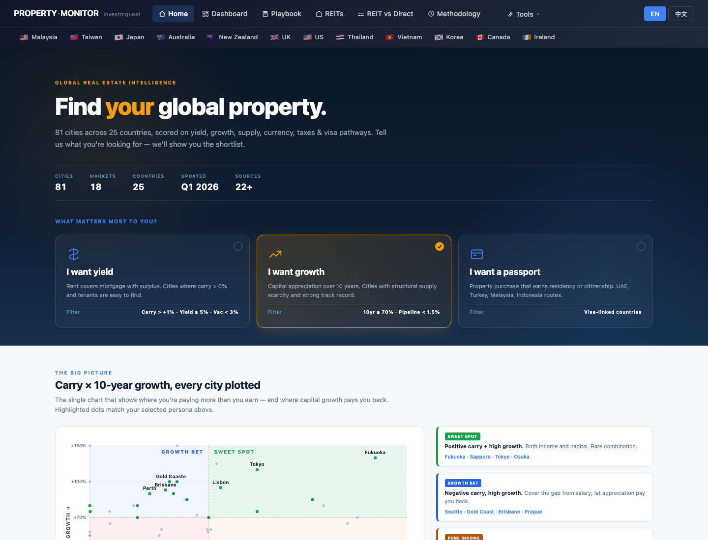
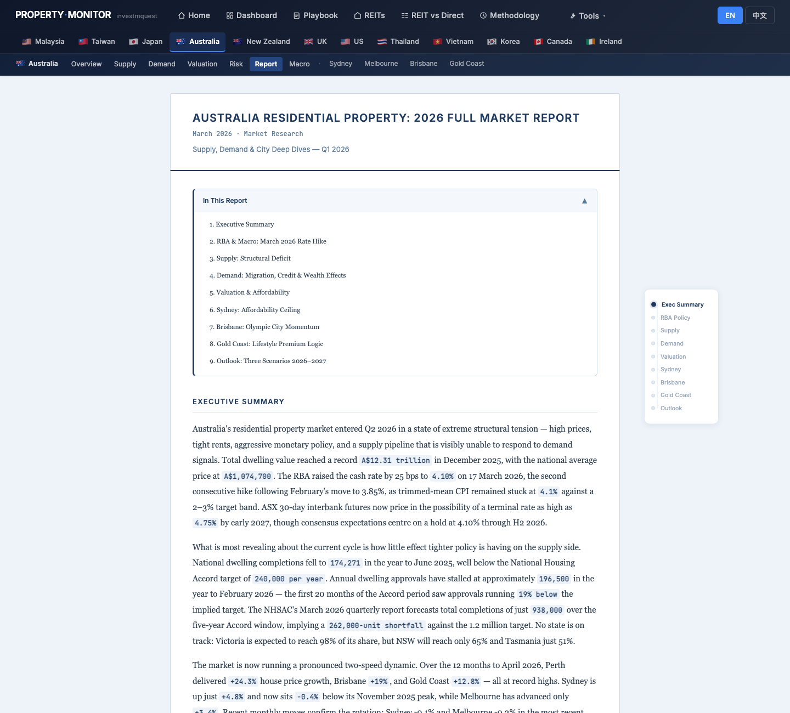
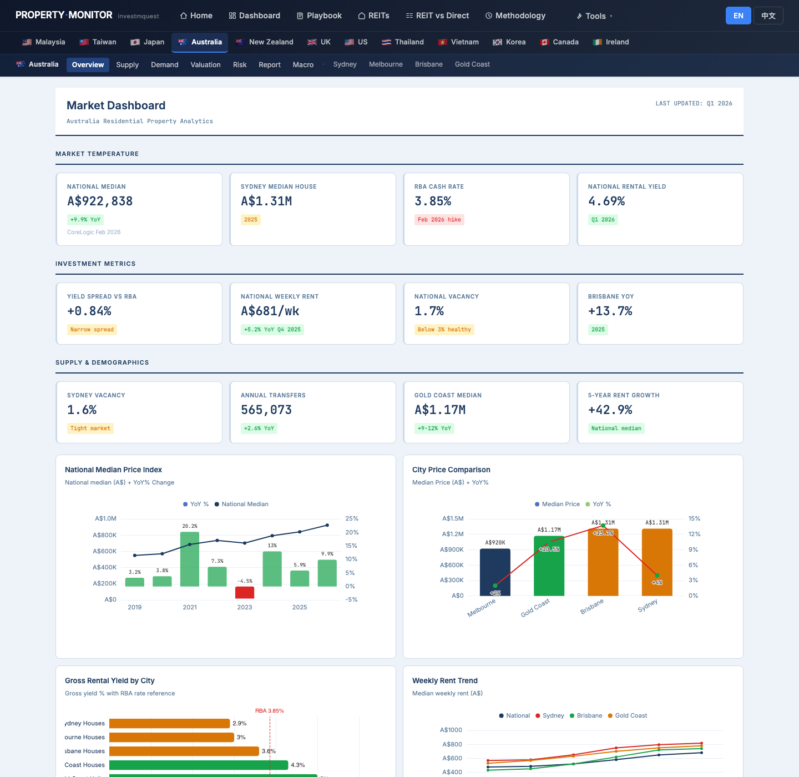
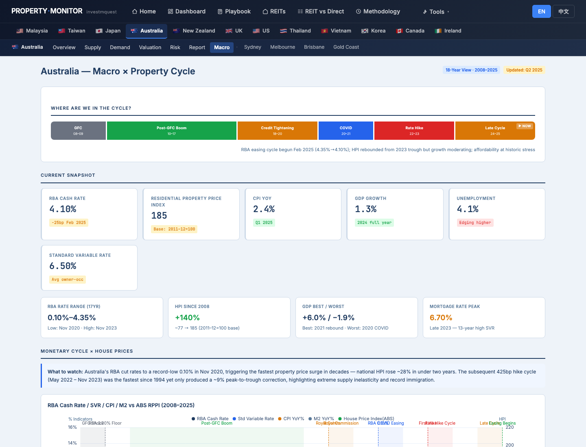
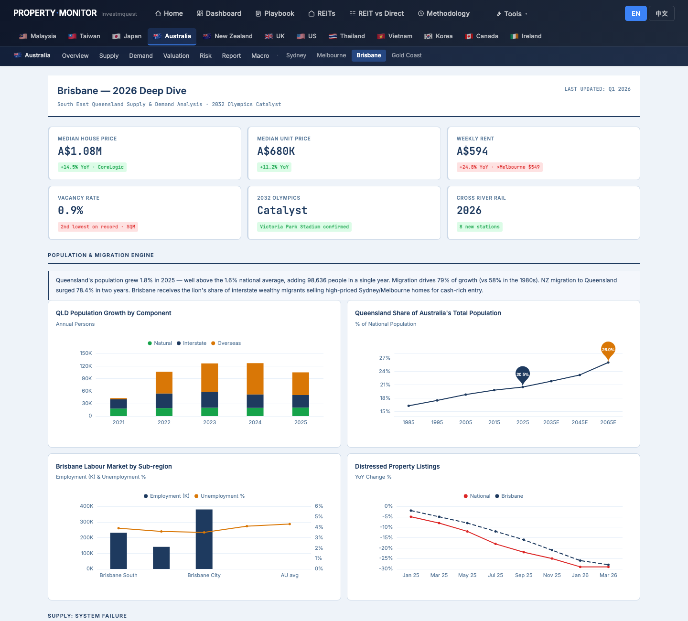
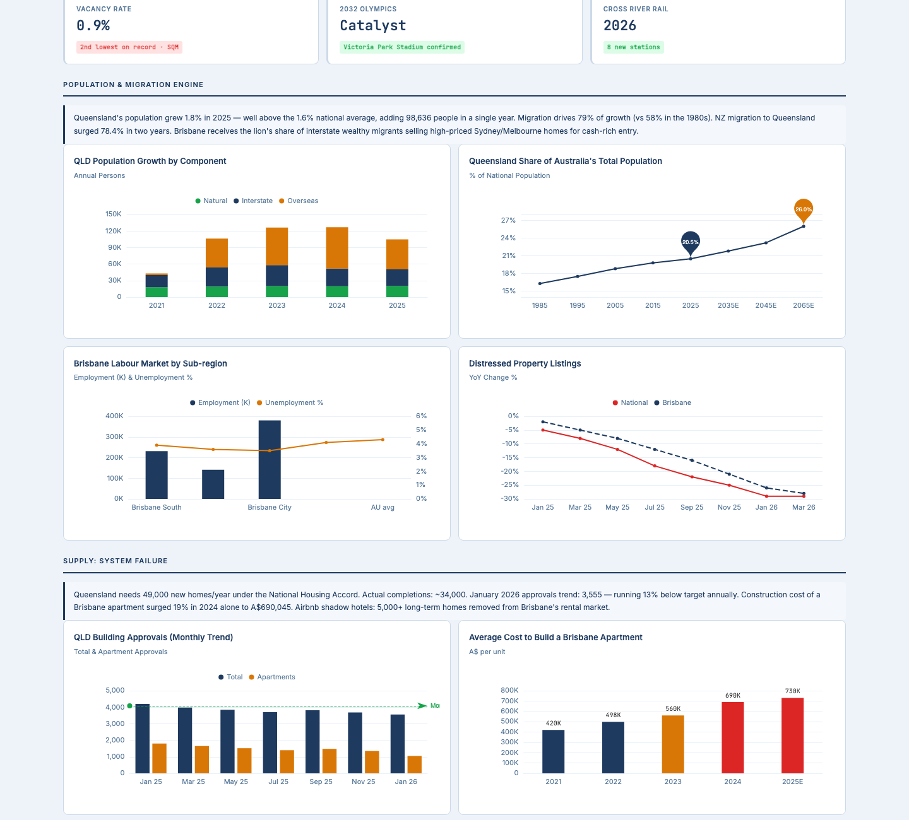
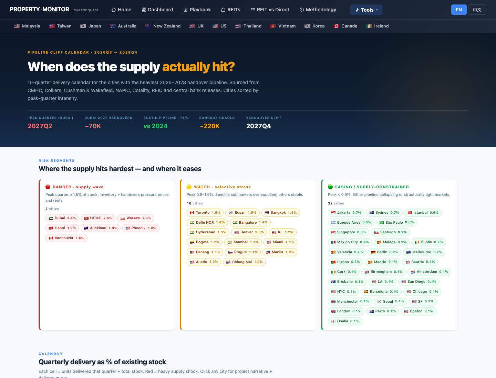
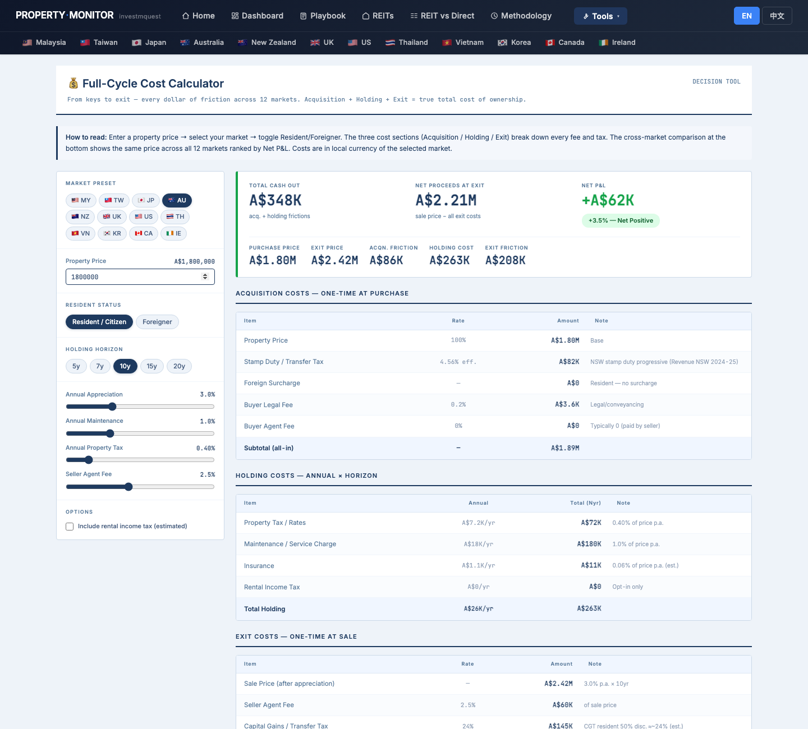
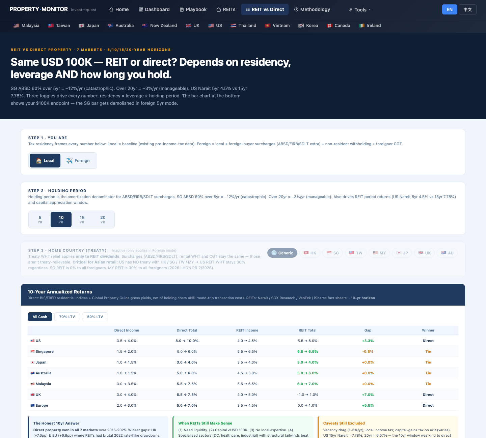
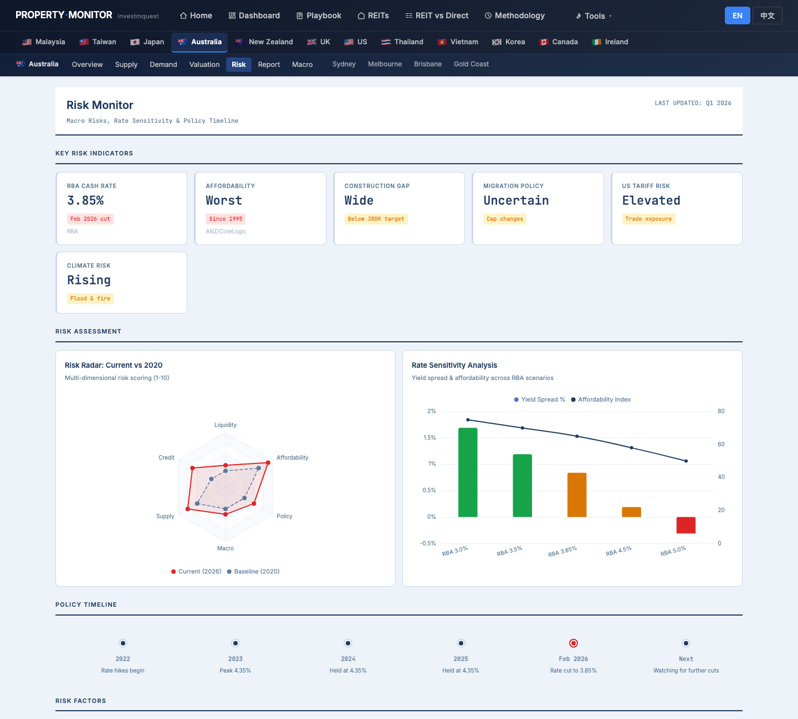

Mr. & Mrs. Wang (both 42, finance professionals from Taipei) hold Australian PR and are relocating with their two school-age kids. Budget A$1.8M, buying to live in + capital growth — not yield-focused. PR status means zero foreign-buyer surcharge in any Australian state — a significant cost advantage. They've never used Property Monitor. This walkthrough shows you which page to open first, what to click, what each chart means, and where to find each function — using the Wangs' questions as the lens. It is not investment advice, tax advice, or property recommendations. 王先生夫婦，皆 42 歲，台北金融業，持澳洲 PR，攜兩名就學年齡孩子搬遷。預算 A$180 萬，目標自住 + 資本增值 — 不以收益為主。PR 身分代表在澳洲任何一州都免外國買家附加稅 — 顯著的成本優勢。他們從沒用過 Property Monitor。這份導覽用王家的問題當主軸，告訴你先打開哪一頁、點哪裡、每張圖代表什麼、各種功能藏在哪。本文不是投資建議、稅務建議或不動產推薦。
- Where does Australia data live, and how do I navigate from the home page to city detail?澳洲資料在哪？怎麼從首頁一路鑽到城市深度頁？
- Where is the long-form analyst narrative so I can understand the story before clicking charts?哪裡能讀到分析師長篇敘述，讓我在看圖之前先搞清楚「故事是什麼」？
- Sydney vs Melbourne vs Brisbane vs Gold Coast — how do I triage four cities for schools, commute, and capital growth?雪梨 vs 墨爾本 vs 布里斯本 vs 黃金海岸 — 怎麼用學區、通勤和資本增值來篩選四個城市？
- What does the Supply pipeline look like for my chosen city — will new stock dilute my growth?我選的城市供給管道長什麼樣子 — 新供給會稀釋增值嗎？
- What does A$1.8M actually cost end-to-end as a resident (PR = no foreign surcharge)?身為居民（PR 免外國買家附加稅），A$180 萬含取得、持有、退場的實際總成本是多少？
- Should I buy direct or buy A-REITs — what does the REIT vs Direct tool say in Local mode?直接買房 vs 買 A-REIT — REIT vs Direct 工具切到本地模式顯示什麼？
- Where is the Carry Heatmap — does AU still make sense for a growth buyer vs other markets?Carry Heatmap 在哪 — 對成長型買家來說，澳洲相對其他市場還有吸引力嗎？
The Wangs' click-by-click tour — 12 stops王家的逐步點擊旅程 — 12 個停靠點
Each stop is a real page on the site. For each, you'll see what they click, what the screen shows, and how that screen relates to the Wangs' PR-relocation situation. Follow along in another tab — every URL works. 每個停靠點都是站上的一頁實際畫面。每站告訴你他們點什麼、螢幕出現什麼、這個畫面跟王家 PR 搬遷情境有什麼關係。建議另開分頁跟著走 — 所有連結都能直接點。
Land on the home page and pick the "growth" persona進入首頁，選「增值」persona 卡
What they see: the chosen card lights up amber with a checkmark. The growth persona filters the world map and scatter chart to highlight markets with strong capital growth track records — Australia features prominently, given its 10-year appreciation record. The Top-5 strip below the map reweights to "10-year capital growth" leaders. 螢幕出現什麼：選中的卡片變琥珀色亮起並打勾。增值 persona 過濾世界地圖和散點圖，高亮強資本增值紀錄的市場 — 澳洲因十年增值紀錄而表現突出。地圖下方 Top-5 依「十年資本增值」重新排序。

Use the world map to locate Australia and compare its metrics用世界地圖找到澳洲，比較指標
What they see: dot color depth = how strong the 10yr metric. The Top-5 strip below the map ranks cities by 10-year growth, with a ★ next to growth-persona matches. The city dots in Southeast Asia and Oceania are visible side-by-side — useful for cross-market comparison before committing to Australia. 螢幕出現什麼：點顏色深度代表十年指標強度。地圖下方 Top-5 列表依十年增值排序，符合增值 persona 的旁邊有 ★。東南亞和大洋洲城市點並排可見 — 在確定澳洲之前，方便跨市場比較。

Read the Australia long-form market report first — get the narrative before the numbers先讀澳洲長篇市場報告 — 看完故事再看數字
What they see: a long-form analyst report with paragraphs of narrative, embedded stats, and 4 inline ECharts (National Dwelling Value & Avg Price, City House Price Growth YoY, Rental Vacancy Rate, Resale Profitability). A Table of Contents box at the top (collapsible) lists 9 sections. A fixed left-side progress nav (on desktop) lets them jump by dot-click. Section headings cover: Executive Summary · RBA & Macro: March 2026 Rate Hike · Supply: Structural Deficit · Demand: Migration, Credit & Wealth Effects · Valuation & Affordability · Sydney: Affordability Ceiling · Brisbane: Olympic City Momentum · Gold Coast: Lifestyle Premium Logic · Outlook: Three Scenarios 2026–2027. 螢幕出現什麼：長篇分析師報告，段落敘述配內嵌統計與四張內嵌 ECharts（全國住宅總值與均價、各城市年增率、空置率、轉售獲利率）。頂部可收合的目錄框列出 9 個章節。桌面版左側固定進度導航可點點跳轉。章節標題：執行摘要 · RBA 與總經：2026年3月升息 · 供給：結構性赤字 · 需求：移民、信貸與財富效應 · 估值與可負擔性 · 雪梨：可負擔性天花板 · 布里斯本：奧運城市動能 · 黃金海岸：生活方式溢價邏輯 · 展望：2026–2027年三大情境。

Read the Australia dashboard — three KPI grids and six charts讀澳洲儀表板 — 三排 KPI 與六張圖表
What they see:
螢幕出現什麼：
① MARKET TEMPERATURE — National Median, Sydney Median House, RBA Cash Rate, National Rental Yield.
② INVESTMENT METRICS — Yield Spread vs RBA, National Weekly Rent, National Vacancy, Brisbane YoY.
③ SUPPLY & DEMOGRAPHICS — Sydney Vacancy, Annual Transfers, Gold Coast Median, 5-Year Rent Growth.
Below the KPIs: 6 ECharts — National Median Price Index (with YoY%), City Price Comparison, Gross Rental Yield by City, Weekly Rent Trend, Vacancy Rate by City, Annual Property Transfers.
① 市場溫度 — 全國中位價、雪梨房屋中位價、RBA 現金利率、全國租金收益率。
② 投資指標 — 利差 vs RBA、全國每週租金、全國空置率、布里斯本年增率。
③ 供給與人口 — 雪梨空置率、年度交易量、黃金海岸中位價、五年租金增長。
KPI 下方六張 ECharts — 全國中位價格指數（含 YoY%）、城市價格比較、各城市毛租金收益率、每週租金趨勢、各城市空置率、年度產權移轉量。

Open Macro × Cycle — where is the RBA rate cycle, and what does "Late Cycle" mean for buyers?開 Macro × Cycle 頁 — RBA 利率週期在哪個位置，「週期晚期」對買家意味著什麼？
What they see: below the cycle bar, 5 KPI cards (RBA Cash Rate, Residential Property Price Index, CPI YoY, GDP Growth, Unemployment). Then 4 historical event cards (two columns). Then multi-line macro charts: RBA rate path, CPI vs RBA target, GDP growth trend, unemployment trajectory. Finally a macro insights section with summary cards connecting macro data to property implications. 螢幕出現什麼：週期軸下方 5 張 KPI 卡（RBA 利率、住宅房價指數、CPI、GDP、失業率）。然後 4 張歷史事件卡（兩欄）。再來多條折線圖：RBA 利率路徑、CPI vs RBA 目標、GDP 增長趨勢、失業率走勢。最後是 macro insights，用摘要卡片把總經數據連接到房市含義。

City triage — open all four city pages and compare KPIs side-by-side城市篩選 — 打開四個城市頁面，並排比較 KPI
What they see across four tabs (KPI highlights):
▸ Sydney — Median house A$1.6M (over budget for house), unit A$903K (within range), clearance rate 55% (weak), vacancy 1.5%, section labels: Macro & Monetary Policy / Demographics & Migration / Supply / Demand & Auction Market / Suburb Deep Dive / Investment Landscape. School zone maps visible in suburb deep dive.
▸ Melbourne — Median house A$920K (within budget), gross yield 3.0–4.5%, land tax reform headwind (red badge), vacancy 1.4%, three zones: Inner (Fitzroy/South Yarra) / East (Box Hill/Glen Waverley, top school zones) / Outer West (Melton/Werribee). East zone explicitly flagged for school zones.
▸ Brisbane — Median house A$1.08M (within budget), +14.5% YoY (strongest in group), vacancy 0.9% (lowest), Cross River Rail 2026 (8 new stations), 2032 Olympics catalyst confirmed. Section: Population & Migration Engine / Supply Pipeline / Investment Deep Dive / Suburb Scorecard.
▸ Gold Coast — Median house A$1.32M (within budget), +12.8% YoY, vacancy 0.9%, listings -40% vs 10Y avg. "From Holiday Destination to Premium Lifestyle Hub" — school proximity less explicit than Brisbane or Melbourne East.
四個分頁看到的 KPI 重點：
▸ 雪梨 — 房屋中位價 A$160萬（超預算），公寓 A$90.3萬（在範圍內），清盤率 55%（偏弱），空置率 1.5%，段落標題：總經與貨幣政策 / 人口與移民 / 供給 / 需求與拍賣市場 / 郊區深度研究 / 投資概覽。郊區深度研究中可見學區地圖。
▸ 墨爾本 — 房屋中位價 A$92萬（在預算內），毛收益率 3.0–4.5%，土地稅改革逆風（紅標），空置率 1.4%，三大分區：內城（費茲羅伊/南亞拉）/ 東區（博士山/格倫韋弗利，頂級學區）/ 外西區（梅爾頓/韋里比）。東區明確標記學區優勢。
▸ 布里斯本 — 房屋中位價 A$108萬（在預算內），年增 +14.5%（四城之最），空置率 0.9%（最低），跨河鐵路 2026（8座新站），2032奧運催化劑已確認。段落：人口爆炸與移民引擎 / 供給管道 / 投資深度研究 / 郊區評分卡。
▸ 黃金海岸 — 房屋中位價 A$132萬（在預算內），年增 +12.8%，空置率 0.9%，在售房源較十年均值少 40%。「從度假勝地到頂級生活方式樞紐」 — 學校毗鄰性不如布里斯本或墨爾本東區明確。

Drill into Brisbane — read the full deep dive for the chosen city深入布里斯本 — 閱讀選定城市的完整深度研究
What they see: 6 KPI cards — Median House A$1.08M, Median Unit A$680K, Weekly Rent A$594 (+24.8% YoY), Vacancy 0.9% (2nd lowest on record), 2032 Olympics Catalyst, Cross River Rail 2026 (8 new stations). Charts: QLD Population Growth by Component · QLD Population Share · Brisbane Labour Market by Sub-region · Distressed Property Listings. Sections include an insight-box for each topic, plus a suburb scorecard table comparing key metrics across Brisbane submarkets. 螢幕出現什麼：6 張 KPI 卡 — 房屋中位價 A$108萬、公寓中位價 A$68萬、每週租金 A$594（年增 +24.8%）、空置率 0.9%（歷史第二低）、2032奧運催化劑、跨河鐵路 2026（8 座新站）。圖表：昆士蘭人口增長構成 · 昆士蘭人口佔比 · 布里斯本各分區就業市場 · 不良資產上市量。每個主題各有一個 insight-box，以及比較布里斯本各子市場關鍵指標的郊區評分卡。

Pipeline Cliff — check how many new units are coming for BrisbanePipeline Cliff — 確認布里斯本新增供給量
What they see: a color-coded pipeline heatmap — green cells = low new supply (good for existing owners), orange/red = heavy pipeline. Each cell shows a percentage of existing stock. Below the heatmap, a vertical bar chart shows approved vs under-construction volume for each city. An insight card summarizes the "cliff" risk for each market — where the pipeline drops off sharply after near-term completions. 螢幕出現什麼：顏色編碼的供給管道熱力圖 — 綠色格子 = 新供給低（對現有業主有利），橘/紅色 = 供給壓力重。每格顯示佔現有存量的百分比。熱力圖下方，垂直長條圖顯示每個城市的已核准 vs 興建中量。洞察卡匯總每個市場的「懸崖」風險 — 供給管道在近期完工後急劇萎縮的地方。

Cost Calculator — what does A$1.8M actually cost as a Resident over 10 years?Cost Calculator — 身為居民，A$180 萬 10 年總成本是多少？
What they see: hero KPIs (TOTAL CASH OUT / NET PROCEEDS AT EXIT / NET P&L verdict) + supporting stats. Three breakdown tables —
① Acquisition — price, stamp duty (resident rate, no foreign surcharge), buyer's agent, legal fees.
② Holding — council rates, strata/maintenance, insurance, land tax (if applicable).
③ Exit — seller agent fee, CGT (residents pay 50% discount if held 12m+, so effective rate on half the gain).
Plus a stacked bar chart, annual holding-cost line, and 12-market comparison table (AU row highlighted).
螢幕出現什麼：頂部 hero KPI（TOTAL CASH OUT／NET PROCEEDS AT EXIT／NET P&L 判決）+ 輔助統計。三張明細表 —
① Acquisition — 物業價、印花稅（居民稅率，免外國買家附加稅）、買方仲介、律師費。
② Holding — 市政費、物業費/維護、保險、地稅（如適用）。
③ Exit — 賣方仲介費、資本利得稅（居民持有 12 個月以上享 50% 折扣，即以一半的增值課稅）。
另有堆疊長條圖、年度持有成本折線、12 市場比較表（AU 列高亮）。

REIT vs Direct — Local mode: does buying Brisbane property beat A-REITs over 10 years?REIT vs Direct — 本地模式：買布里斯本房產 vs 買 A-REIT，10 年誰贏？
What they see: a 7-row comparison table (US/SG/JP/AU/MY/UK/EU) — they read the AU row: Direct Income vs REIT Income, Direct Total vs REIT Total, Gap, Winner. In Local mode, the context cards on the right show "Local Mode" — no foreign WHT issues. A bar chart shows the USD terminal value for each market across 5/10/15/20-year horizons, toggleable by holding period. The Step 3 panel shows "Home Country" treaty effects (grayed out in Local mode since no treaty needed for domestic investors). 螢幕出現什麼：7 列比較表（美/新/日/澳/馬/英/歐） — 讀 AU 那一列：Direct Income vs REIT Income、Direct Total vs REIT Total、Gap、Winner。本地模式下，右側脈絡卡顯示「Local Mode」 — 沒有外國預扣稅問題。長條圖顯示每個市場在 5/10/15/20 年持有期下的美元終值，可依持有期切換。Step 3 面板顯示「母國」協定效應（本地投資者不需要，因此在本地模式下為灰色）。

Carry Heatmap — does AU still offer positive carry relative to other markets?Carry Heatmap — 澳洲相對其他市場仍有正 carry 嗎？
What they see: a multi-city heatmap table where each cell is color-coded from deep green (strong) to red (weak). AU cities have lower gross yields than JP or MY, but the Growth Score column reflects strong capital appreciation track records. The net carry column (yield minus holding costs) may show negative or thin carry for Sydney and Melbourne, but Brisbane and Gold Coast tend to show better net figures due to higher rent growth. A bubble chart typically plots yield vs growth score by city, helping them visualize the trade-off. 螢幕出現什麼：多城市熱力圖表，每個格子從深綠（強）到紅（弱）色碼標示。澳洲城市毛收益率低於日本或馬來西亞，但增值評分欄反映強勁的資本增值歷史紀錄。淨 carry 欄（收益率減持有成本）在雪梨和墨爾本可能顯示負值或偏薄，但布里斯本和黃金海岸因較高的租金增長通常顯示較好的淨值。氣泡圖通常按城市繪製收益率 vs 增值評分，幫助他們視覺化取捨。

Risk Monitor + Methodology — verify the data before actingRisk Monitor + Methodology — 行動前驗證資料來源
What they see on Risk: 6 KPI cards — RBA Cash Rate (red), Affordability "Worst Since 1995" (red), Construction Gap "Below 300K Target" (orange), Migration Policy "Uncertain" (orange), US Tariff Risk "Elevated" (orange), Climate Risk "Rising / Flood & Fire" (orange).
Risk Radar chart: 6 axes (Macro / Credit / Supply / Affordability / Policy / Climate) — current reading vs 2020 baseline, showing where risk has increased most. Rate Sensitivity chart shows yield spread and affordability impact across RBA rate scenarios.
Policy Timeline: 2022 rate hikes → 2023 peak 4.35% → 2024 held → 2025 held → Feb 2026 cut 3.85% (highlighted).
On Methodology: the Australia row shows: Price Index = CoreLogic · Rent / Vacancy = SQM Research · Transactions = ABS · Central Bank = RBA.
Risk 頁出現什麼：6 張 KPI 卡 — RBA 利率（紅）、負擔能力「1995年以來最差」（紅）、建設缺口「低於30萬目標」（橘）、移民政策「不確定」（橘）、美國關稅風險「升高」（橘）、氣候風險「上升/洪水與火災」（橘）。
風險雷達圖：6 軸（總經/信貸/供給/負擔能力/政策/氣候） — 當前讀數 vs 2020 基準，顯示哪裡風險增加最多。利率敏感度圖顯示不同 RBA 利率情境下的利差與負擔能力影響。
政策時間線：2022 開始升息 → 2023 峰值 4.35% → 2024 維持 → 2025 維持 → 2026 年 2 月降至 3.85%（高亮）。
Methodology：澳洲列：Price Index = CoreLogic · Rent / Vacancy = SQM Research · Transactions = ABS · Central Bank = RBA。

Site cheat sheet — the 6 site-wide patterns the Wangs need to know網站小抄 — 王家要記得的 6 個全站通用規則
These work the same way on every page across all markets — learn once, use everywhere.以下規則每一頁、每個市場都一致 — 學一次，整站通用。
Language toggle語言切換
Top-right of every page: two pill buttons EN / 中文. Choice is remembered across pages and visits via localStorage.每頁右上角：兩顆膠囊鈕 EN / 中文。選擇會用 localStorage 跨頁、跨次造訪記住。
Tip: switch to 中文 first, then download PDF — the PDF will be in 中文.小技巧：先切到中文再下載 PDF，PDF 就會是中文版。
Market selector市場選擇
Navbar second row: a country flag for each market. Hover 🇦🇺 to see: Overview / Supply / Demand / Valuation / Risk / Macro / Report + city sub-pages (Sydney · Melbourne · Brisbane · Gold Coast).Navbar 第二列：每個市場一面國旗。游標停在 🇦🇺 → 跳出下拉，含 Overview / Supply / Demand / Valuation / Risk / Macro / Report 與城市子頁（雪梨 · 墨爾本 · 布里斯本 · 黃金海岸）。
The Wangs use 🇦🇺 → Brisbane to jump straight to city detail after the triage decision.王家在城市篩選決策後，用 🇦🇺 → Brisbane 直接跳到城市深度頁。
Tools dropdownTools 下拉選單
All cross-market analytical tools: Home, Dashboard, REIT vs Direct, Carry Heatmap, Pipeline Cliff, Cost Calculator, Methodology, Buy vs Rent, Stress Test, Yield Spread.所有跨市場分析工具：Home、Dashboard、REIT vs Direct、Carry Heatmap、Pipeline Cliff、Cost Calculator、Methodology、Buy vs Rent、Stress Test、Yield Spread。
If a tool isn't market-specific, it's in here — including the Stress Test which lets Wangs model a rate-shock on their mortgage.非市場專屬工具都在這裡 — 包括 Stress Test，可讓王家模擬利率衝擊對房貸的影響。
KPI card colorsKPI 卡顏色
Left border color tells you the read at a glance.左邊框顏色一眼告訴你判讀。
Four city deep-dives四個城市深度頁
AU has four city deep-dive pages: /au/sydney, /au/melbourne, /au/brisbane, /au/goldcoast. Each has its own KPI grid, section-by-section analysis, and ECharts. Open all four in tabs for the triage comparison.澳洲有四個城市深度頁：/au/sydney、/au/melbourne、/au/brisbane、/au/goldcoast。各有自己的 KPI grid、逐段分析和 ECharts。全部在分頁開啟做篩選比較。
Melbourne deep-dive explicitly flags East zone (Box Hill, Glen Waverley) for top school zones — useful if education is the #1 filter.墨爾本深度頁明確標示東區（博士山、格倫韋弗利）為頂級學區 — 如果教育是第一篩選標準，這很有用。
Save any page as PDF把任何頁面存成 PDF
Press ⌘ + P (Mac) or Ctrl + P (Windows) → choose "Save as PDF". The print stylesheet hides the navbar so the PDF looks clean.按 ⌘ + P（Mac）或 Ctrl + P（Windows）→ 選「另存為 PDF」。印刷樣式表會自動隱藏 navbar，PDF 版面乾淨。
This walkthrough has a dedicated "Download PDF" button at the bottom.本導覽底部有專屬「下載 PDF」按鈕。
What the Wangs walk away with — and what they must take outside this site王家帶走什麼 — 以及哪些必須拿到站外去問
After the 12-stop tour, they have a clear separation between "questions the site answered" and "questions the site flagged but cannot answer."走完 12 站後，他們能清楚分開「網站已回答的問題」與「網站幫他們點出但不能回答的問題」。
✓ The site answered these for them✓ 網站已回答的
- Which persona to pick on /home ("growth") and how it reweights the map to highlight Brisbane and Gold Coast as the 10-year capital growth leaders首頁選哪個 persona（「增值」），以及它如何重新調整地圖，突出布里斯本和黃金海岸為十年資本增值領先者
- The full market narrative in plain prose before they click any chart — AU report covers RBA cycle, structural supply deficit, city deep dives (§6–8)用白話文寫的完整市場敘述，在點任何圖之前先讀 — 澳洲報告涵蓋 RBA 週期、結構性供給赤字、城市深度研究（§6–8）
- City triage logic — Sydney over-budget for house / Melbourne East school zones but land tax headwind / Gold Coast lifestyle but weaker school proximity / Brisbane: budget headroom + top YoY + Cross River Rail + 2032 Olympics城市篩選邏輯 — 雪梨房屋超預算 / 墨爾本東區學區好但土地稅逆風 / 黃金海岸生活好但學校毗鄰較弱 / 布里斯本：預算有餘裕 + 頂級年增率 + 跨河鐵路 + 2032 奧運
- Brisbane supply pipeline — via Pipeline Cliff, confirms mid-term supply is constrained (no flood of new units expected in years 3–5 of their hold)布里斯本供給管道 — 透過 Pipeline Cliff，確認中期供給受限（持有 3–5 年期間預計不會出現新供給洪流）
- What PR status saves them — Cost Calculator Resident mode shows no foreign surcharge; toggling Foreigner reveals the exact amount saved (varies by state; for QLD purchases it's 7% surcharge avoided)PR 身分幫他們省了多少 — Cost Calculator 居民模式顯示免外國附加稅；切換到外國人模式顯示精確節省金額（因州而異；昆士蘭購房避免 7% 附加）
- 10-year total cost structure as a resident — acquisition (resident stamp duty), holding (council rates, strata, insurance, land tax), exit (CGT with 50% discount if held 12m+)居民身分的 10 年總成本結構 — 取得（居民印花稅）、持有（市政費、物業費、保險、地稅）、退出（CGT，持有 12 個月以上享 50% 折扣）
- Direct property vs A-REIT comparison in Local mode — REIT vs Direct confirms direct property retains CGT 50% discount (not available on REIT trust income) and provides the lifestyle asset simultaneously本地模式下直接房產 vs A-REIT 比較 — REIT vs Direct 確認直接房產保留 CGT 50% 折扣（信託收入不享有），且同時提供生活資產
- AU's position in cross-market carry — Carry Heatmap confirms Brisbane/Gold Coast growth score is the top AU entry; lower gross yield than JP/MY but superior capital growth trajectory and currency stability澳洲在跨市場 carry 中的位置 — Carry Heatmap 確認布里斯本/黃金海岸增值評分是澳洲最高；毛收益率低於日本/馬來西亞，但資本增值軌跡和貨幣穩定性更佳
- Two flagged risks for AU buyers — Affordability at historic stress (AU risk page) and Climate Risk (flood & fire) — the site names both explicitly so they know what to verify with local advisors澳洲買家的兩個標記風險 — 負擔能力達歷史壓力水位（澳洲 risk 頁）和氣候風險（洪水與火災） — 網站明確點名兩者，讓他們知道需要向當地顧問確認什麼
- Where every number comes from — Methodology page AU row: CoreLogic · SQM Research · ABS · RBA每個數字的來源 — Methodology 頁澳洲列：CoreLogic · SQM Research · ABS · RBA
→ Questions for advisors outside this site→ 必須拿到站外問專業人士的
- Suburb flood zone check — Brisbane Council flood maps before committing to a specific suburb; flood insurance availability and premium → Brisbane City Council flood overlay map + insurance broker郊區洪水區確認 — 在確定具體郊區前查布里斯本市政府洪水地圖；洪水保險的可得性和保費 → 布里斯本市政府洪水覆蓋地圖 + 保險經紀
- School zone catchment verification — state school catchments change annually; exact street-level enrolment eligibility must be confirmed with Queensland State Schools Office → QDET school catchment tool學區學籍資格確認 — 公立學校學區每年變動；確切到街道級別的入學資格必須向昆士蘭州教育局確認 → QDET 學區查詢工具
- CGT structuring and tax residency — if the Wangs have Taiwanese-source income, the AU-TW tax relationship (no formal DTA) and their AU tax residency status affect CGT, rental income, and offshore income reporting → AU-registered tax agent (CPA or CA)CGT 結構和稅務居民身分 — 若王家有台灣來源收入，澳台關係（無正式租稅協定）和他們的澳洲稅務居民身分影響 CGT、租金收入和境外收入申報 → 澳洲註冊稅務代理（CPA 或 CA）
- Strata/body corporate inspection — for units and townhouses, strata records (AGM minutes, sinking fund balance, levy history, insurance) must be physically inspected → licensed strata inspector in Brisbane分層產權/業主委員會記錄查驗 — 公寓和連棟住宅的分層產權記錄（業主大會記錄、維修基金結餘、管理費歷史、保險）必須實物查閱 → 布里斯本持牌分層產權檢查員
- Mortgage pre-approval as PR holders — lenders treat PRs differently from citizens on foreign income documentation; Taiwanese-sourced income requires assessment under APRA guidelines → major bank or mortgage broker (Westpac, CBA, ANZ or specialist broker)持 PR 的房貸預批 — 貸款機構對持台灣來源收入的 PR 和公民有不同文件要求；台灣來源收入需依 APRA 指引評估 → 主要銀行或房貸經紀（西太平洋銀行、聯邦銀行、澳新銀行或專業經紀）
- Building and pest inspection — mandatory before unconditional exchange; a property that looks clean on paper can have structural issues invisible to the market data → licensed inspector in Brisbane建築和蟲害檢查 — 無條件交換前必做；表面上資料清晰的物業可能有市場數據看不到的結構問題 → 布里斯本持牌檢查員
The site's best-supported call for the Wang Family站上資料能支持的最佳選項 — 給王家
Not a personalized recommendation — a single, opinionated call assembled only from data this site already shows in SECTIONS 01–04.非個人化推薦 — 是從 SECTION 01–04 站上資料推導出的單一明確建議。
✓ Pre-commit checklist (from site data)✓ 進場前 checklist（站上資料能驗證的）
/au/sydney.htmlKPI metrics: median price for Lower North Shore stays within their A$1.8M ceiling at offer week./au/sydney.htmlKPI：Lower North Shore 中位價在出價週仍在 A$1.8M 上限內。- Pipeline Cliff Sydney status not DANGER (next 2–3 years supply absorbable).Sydney Pipeline Cliff 不在 DANGER（未來 2-3 年供給可去化）。
/au/Carry Heatmap: Sydney 5-year direction not declining; rolling yield positive./au/Carry Heatmap：Sydney 5 年方向不下行、rolling yield 為正。- Risk page macro/policy: RBA rate cycle past peak, NSW stamp duty regime stable.Risk 頁 macro/政策：RBA 升息週期過峰、NSW 印花稅制穩定。
- Cost Calculator 10-year cost (PR rates, no FIRB surcharge) clears their education-priority budget.Cost Calculator 10 年成本（PR 稅率、無 FIRB）通過教育優先預算。
→ Off-site next steps (the site cannot answer)→ 走出站外的下一步（站上無法回答的）
- MARA-registered migration agent — PR maintenance, citizenship pathway, residence requirements while child schooling.MARA 註冊移民顧問 — PR 維持、入籍路徑、子女就學期間居住要求。
- Australian tax accountant — TW/AU dual tax position, CGT main residence rule, super contribution strategy.澳洲稅務會計師 — TW/AU 雙重稅務、CGT 主要住所規則、super 提撥策略。
- Mortgage broker — PR borrower options, typically 80% LTV; lock fixed/variable mix before offer.房貸經紀 — PR 借款方案、一般 LTV 80%；出價前先 lock 固定/浮動組合。
- Building & pest inspector + conveyancer — single-house DD: termite history, drainage, council overlays, easements.建物 + 病蟲害檢查 + conveyancer — 單棟 DD：白蟻歷史、排水、市議會 overlay、地役權。
- School zone verification with NSW Education + property certificate — site cannot guarantee catchment, only the official certificate does.學區驗證 透過 NSW Education + 房產證書 — 站上無法保證學區歸屬，只有官方證書能。
A 3-bed house in Sydney Lower North Shore is the single call most consistent with the 12 stops for a PR family prioritising schooling. The site cannot pick the exact suburb or school catchment — that is the off-site work that determines whether the call survives.Sydney Lower North Shore 的 3-bed 透天是 12 站走完後對「PR + 學區優先」家庭最一致的選項。但具體 suburb 與學區歸屬 — 站上無法替你選，那些才決定這個選項能不能執行。